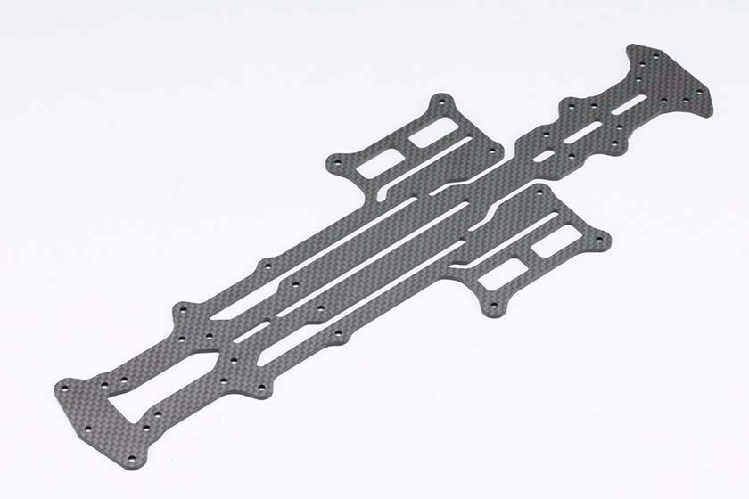
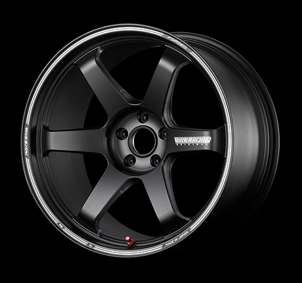

夏休み活動記録
■自分でできる製品開発は何か？自分は作り出していけるものは何か
緊急事態宣言が開けることによって2021年度のラジコンカー全日本選手権の開催が発表され、今年はセントレア空港にて開催される事が発表されました。
今年度は、普段僕の得意とするカテゴリーの大会（種目のようなもの）ではないので、今回のカテゴリーにおいて、自分の好みのスタイルのラジコンカーの制作が必須項目であり、その活動の一部をゼミの活動として、スポンサーに製品開発を投げ流のではなく、自分でできる範囲の中で行動を起こし製品開発を行いました。
その中でも革新性を求め、美しさ、カッコ良さを重視したデザインを具現化しました。

今の自分の持っている技術で何ができるのか？それを考えた場合、３Dでの複雑なデザインをしていくのは難しいと考えたため、現在行う事ができる切削においてアクションを起こしました。

加工の方法
加工に関しては、オリジナルマインドのCNCフライスを使用しました。機械自体は、スポンサー企業の茨城にあるため、自分でデータだけ作り作業は本社にお願いしました。
(この時点で、自分でできる製品開発では無くなってきてしまっていますが....)
最初の時点では、一枚の新品のカーボンから切り出して、製作するのではなく、不良在庫になっている既存のカーボンシャーシ（写真2枚目）のものを利用することにより、経費の削減をしました。
変更点
グラファイトシャーシ共通である2.5mm厚の板材を使用しながら、全体的にスリム化され、さらに大幅な肉抜きが施し、低ミュー路面で効果を発揮することを目的としました
特にリヤ周りはスリット加工で極限まで細く設計し、ねじれによるリヤトラクションを最大限に高めることが可能になりました。
夏休みを経て、私が行っていきたこと
私は、今年度開催される全日本ラジコンドリフト選手権に向けて活動を行ってきた中で、普段とは違うカテゴリー
を行ったことで気づく事がありました。
ラジコンの趣向の変化 競争する楽しみか→見て楽しむ
私は夏休みの期間ドリフトという今までチャレンジしてこなかったカテゴリーに挑戦を始めました。
沢山のラジコンドリフトサーキットに行って商品のテストをしていく中で、今まで僕の考えていたラジコンのニーズとは違った方向のニーズが求められていることを知りました。
コロナウイルスによって、ラジコンを始める人口がラジコンドリフトのカテゴリーでは増加し始めました。
なぜ、急激に増加したのか？それは以下の理由からだと考えました。今まで私の行ってきた速さを競うグリップというカテゴリーでは、ひたすらに速さだけが追求され続けていました。しかしドリフトは、作って楽しむ、見て楽しむと言った。ニーズを満たしており、自粛期間中でも楽しめる要素があるからだと結論づけました。
ドリフトというカテゴリーは、ラジコン走行での美しさやカッコ良さを競う競技です。それを人間の目や機械審査などによって、点数を競うものです。
単純に速さを競うものではなく、走行の美しさを競うというものため、ラジコンの車体に美しさが求められる。そこで新たなニーズに向けたアクションを起こしていきたいと考えました。
☆リアリティを追求する☆
美しさを求められるドリフトラジコン業界で求められるのは、リアリティとオリジナリティからくる所有感であると考えました。
そこで私はドリフトラジコン業界において、新しい投げかけを行おうと考えました
追求したラジコンへ 一人一人に向けたラジコンパーツの制作
ドリフトラジコンの趣向として、実車に似せて楽しむという方が非常に多く、ドリフトラジコンを楽しむ人の中で、アンケートを取ったところ、リアリティを求めるか？という質問に関しては80%以上の方々がYESと回答しました。
そのアンケートを取った上で、どこにビジネスチャンスがあるか考えました。そこで考えたのは
オリジナルラジコンタイヤホイールの販売

です！
現在発売されている競技用ラジコンカーのホイールは、実車に似せたデザインのホイールはあまり多くありません。
そこがビジネスチャンスだと捉えました。
ラジコンの求めるホイールはそれぞれの車、ルックスの好みが異なることから、無限に存在します。
そのため、その一人一人に向けたホイールの制作を行っていきたいと考えています。
現在このラジコンホイールの作成にあたり現在行動していること
・ホイールをデザインし販売するにあたっての版権に関する問題(
現在ラジコンメーカーを通して交渉中
)